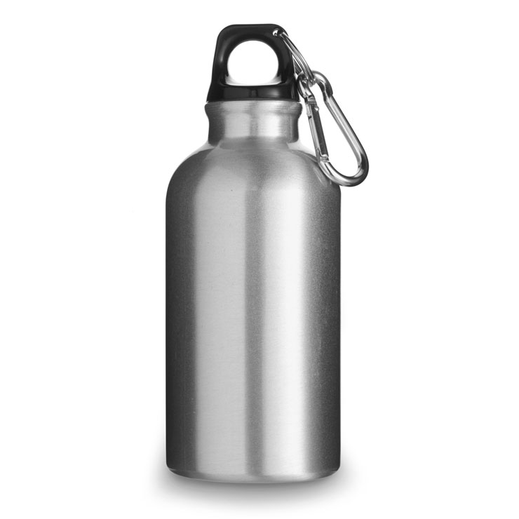
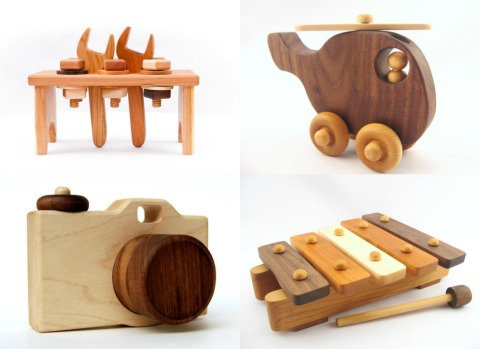
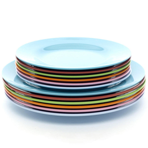
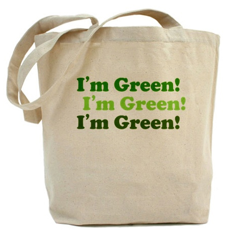
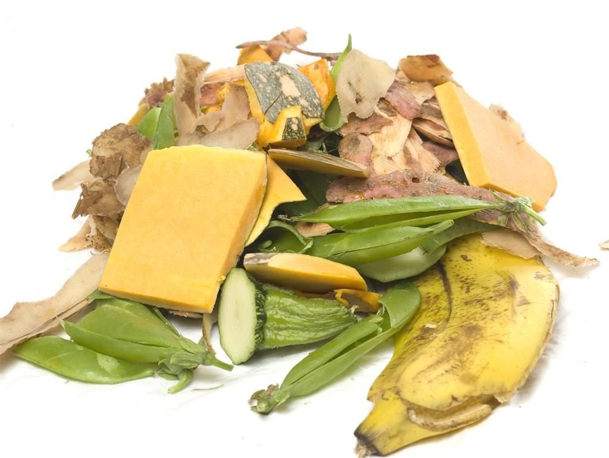
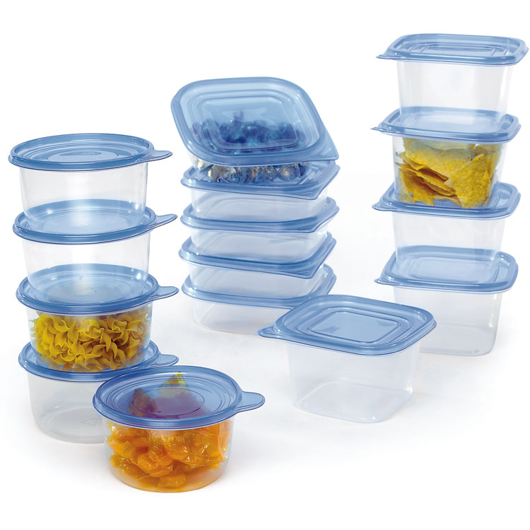
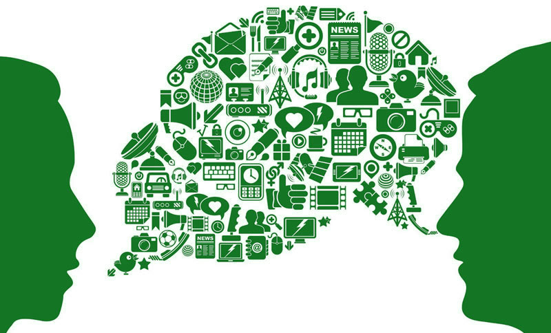

2
використовуйте металеві фляги3
купуйте дерев'яні іграшки4
використовуйте багаторазовий посуд5
зберігайте скляні банки
6
беріть із собою еко-сумку7
органічні відходи викидайте в окреме відро8
використовуйте багаторазові контейнери9
покажіть цю інфографіку своєму другу